| Name | Description | Damage | Stats Requirement |
|---|---|---|---|
| 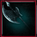 Aldwynn Halberd |
“A common, heavy, two-handed weapon with long reach. Its chipped blade has seen considerable wear, the front of the shaft adopting a red gradient from old blood.” |
43 |
3 finesses |
| 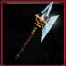 Vados Halberd of Illusions |
“A golden wreathed halberd, with designs of tree roots extending down the shaft. The King's Tree is the heart of Vados, symbolizing strength and longevity.” |
72 |
50 strengths |
| 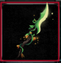 Fang of Gaia |
“Amber forms from the Fang's head, with thick roots and vines twisting into a sturdy grip. Stories exist of the Warden, a being interwoven with Gaia itself, who controls all that is natural. She is said to wield a weapon that accelerates the growth of nearby flora.” |
54 |
60 strengths |
| 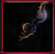 Inquisitor Halberd |
“An immense weapon, wielded by Inquisitor Holdrem in passing judgement. It absorbs the souls of those it executes, sending them to Ylnoth as her master of ordained.” |
72 |
40 strengths |
| Name | Description | Damage | Stats Requirement |
|---|---|---|---|
| 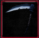 Acolyte Scythe |
“A scythe given to those who worship Death. A scythe used by those who worship Death. Just as a farmer harvests wheat, so too does Death harvest souls. But just as farmers then use the wheat for food, so too does Death feed the spiritual realm. Our life force transcends into a new plane of existence to perpetuate life beyond our limited understanding.” |
35 |
7 finesses |
 Scythe of Restless Spirit |
“A scythe empowered by vengeful souls, torn asunder form their journey towards the nexus. Attacking enemies creates soul fragments.” |
56 |
40 finesses |
| 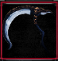 Scythe of Reaping |
“A ritualistic scythe used by those who worship Death. Just as a farmer harvests wheat, so too does Death harvest souls. But just as farmers then use the wheat for food, so too does Death feed the spiritual realm. Our life force transcends into a new plane of existence to perpetuate life beyond our limited understanding.” |
41 |
3 finesses |
| Name | Description | Damage | Stats Requirement |
|---|---|---|---|
| 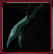 Thief Blade |
“Daggers that deliver attacks in rapid succession. The tools of both thieves and knights, when precision is more valuable than brute force.” |
25 |
2 finesses |
| 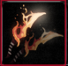 Blades of the Phoenix |
“Daggers infused with the soul of the Phoenix Rider, pure fire surges forth from its molten core as though clawing the air. Her laughter can sometimes be heard as it engulfs its victim in flame.” |
22 |
16 finesses |
| Name | Description | Damage | Stats Requirement |
|---|---|---|---|
| 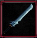 Aldwynn Greatsword |
“A common, heavy, two-handed weapon, particularly effective against multiple foes. Its worn steel bares the weathering of a practiced hand. How many of Vados have fallen to its edge.” |
48 |
2 strengths |
| 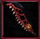 Darkeater Greatsword |
“A hungering eye sits at the hilt of this living blade, yearning for the blood of its next victim. Its fangs extend and retract, threatening to consume its wielder, as the spirit of the Dark Knight lives on.” |
78 |
21 strengths |
| 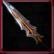 Vil'Dradur Greatsword |
“Favored by the elite guardians of Caer Siorai, these outcast knights of Vil'Dradur worked with the ancient Architects to consolidate their strength. They were granted immortality in exchange for an eternity of servitude.” |
78 |
14 strengths |
| 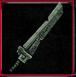 Will of the Gaians |
“An immense sword, carved with designs reminiscent of the Gaian's stonework. The Gaian's origin is shrouded in mystery, but they all share similarities in their stone fragments. Archaeologists have sought to shed light with aid from the Sandmen, who harvest these giants for parts.” |
78 |
40 strengths |
| Name | Description | Damage | Stats Requirement |
|---|---|---|---|
| 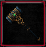 Steel Greathammer |
“A slow weapon that deals heavy damage. Unwieldy to those who lack the strength, but devastating in the right hands.” |
95 |
7 strengths |
| 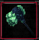 Crystal Greathammer |
“A slow weapon that deals heavy damage. Unwieldy to those who lack the strength, but devastating in the right hands, this crystalline weapon is both beautiful and deadly.” |
95 |
20 strengths |
| Name | Description | Damage | Stats Requirement |
|---|---|---|---|
| 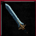 Vados Longsword |
“A standard Vados issued longsword. Its hilt is decorated like a tree, where its branches form the crossguard. The blood stains look as though they're the blossoms of a macabre tree.” |
49 |
4 strengths |
| 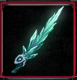 Immortalite Blade |
“A crystaline mass of immortalite forged into a weapon. The fusing process has left them blue and slightly unstable, as shards of its splinter off, blooming on the ground.” |
49 |
16 strengths |
| 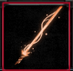 Cauterizing Sabre |
“A weapon from the golems who inhabit Amulvaro's observatory. Its properties are not of this world, as a super heated beam of plasma forms its blade.” |
49 |
30 strengths |
| 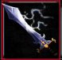 Skybreaker |
"Named after its tremendous power to shatter the sky with lightning, the Skybreaker is ingrained in Aldwynn's sordid past as its guillotine. History doesn't remember the myriad challengers who sought after this legendary weapon, but perhaps it will remember you.” |
49 |
16 strengths |
| Name | Description | Damage | Stats Requirement |
|---|---|---|---|
| 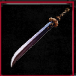 Spell Blade |
“A katana crafted by the Logoth tribe” |
54 |
15 intelligent |
| 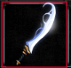 Infinity Slicer |
“Amulvaro’s spellsword, harnessing cosmic magics to twist the space around it into a blade of starlight.” |
72 |
50 intelligent |
| Name | Description | Damage | Stats Requirement |
|---|---|---|---|
| 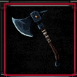 Vados Axe |
“A standard Vados issued axe. Its weathered blade has seen multiple expeditions. Sometimes those who participate simply have nothing more to lose, and everything to gain.” |
47 |
7 strengths |
| 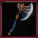 Vrael Cleaver |
“Vrael's side arm, significantly smaller than his main weapon. His axe is decorated with a roaring dragon, a reminder of the constant threat of his own shift. The dragon born are able to undergo genetic shifts that transform them into massive dragons should they lose their sense of self under extreme duress.” |
49 |
16 strengths |
| 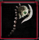 Nightmare Edge |
“An axe made of bone, with a skill at its centerpiece and a spine for it’s handle. Coming from Thalamus, the origin of this weapon leaves you with a chill. You can still see the faint flicker of life in its eyes, as the weapon yearns for death.” |
73 |
60 strengths |
| Name | Description | Damage | Stats Requirement |
|---|---|---|---|
| 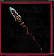 Vados Spear |
“A standard Vados issued spear. Tree roots wind around the shaft of the spear. 'Immovable like a tree, with its heritage deep.' A common saying within Vados, despite its habit of colonially uprooting its neighbors.” |
41 |
7 finesses |
| 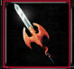 Ione Spear |
“Ione’s spearhead is fashioned into a winged dragon, the crest of the Eku lineage. They were said to be descendants of the last dragon slayers. Her ancestors participated in the liberation of Logoth from the terrors of the one such creature.” |
63 |
15 finesses |
| Name | Description | Damage | Stats Requirement |
|---|---|---|---|
| 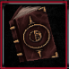 Casting Tome |
“A simple spellbook used by most apprentice practitioners of magic. They are traditionally hand-me-downs from master to ward.” |
17 |
8 intelligent |
| Name | Description | Damage | Stats Requirement |
|---|---|---|---|
| 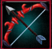 Logoth Shortbow |
“The bow is engraved with the folklore of our annexation into Vados. The banner of a crown wavers in the wind as its knight fend off the assault of a dragon. The lands beyond our homestead are still marred from their brutal engagement.” |
11 |
1 finesse |
| 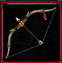 Bow of the Damned |
“Arrows rest the duration of enemy bleed effects. A bow from the Witch Woods, echoing whisper of those it’s killed. The Witch Woods are inhabited by hunters who willingly blind themselves as a challenge. Their pallid skin and lithe bodies are near perfect camouflage in the misty pale forest they call home.” |
11 |
16 finesses |
| Name | Description | Damage | Stats Requirement |
|---|---|---|---|
| 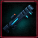 H7 Lancer |
“A curious souvenir from the vaults of Garde Tum. Its mechanism unknown, but its lethality unquestionable. With such marvels of destruction, why did the people of Garde Tum resign themselves to this subterranean labyrinth?” |
5 |
- |
| 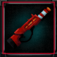 The Swarm |
“A curious souvenir from the vaults of Garde Tum. The projectiles fired by this weapon arc back as if pulled into an unseen orbit. Its usefulness may lie elsewhere than solely in destruction.” |
5 |
- |